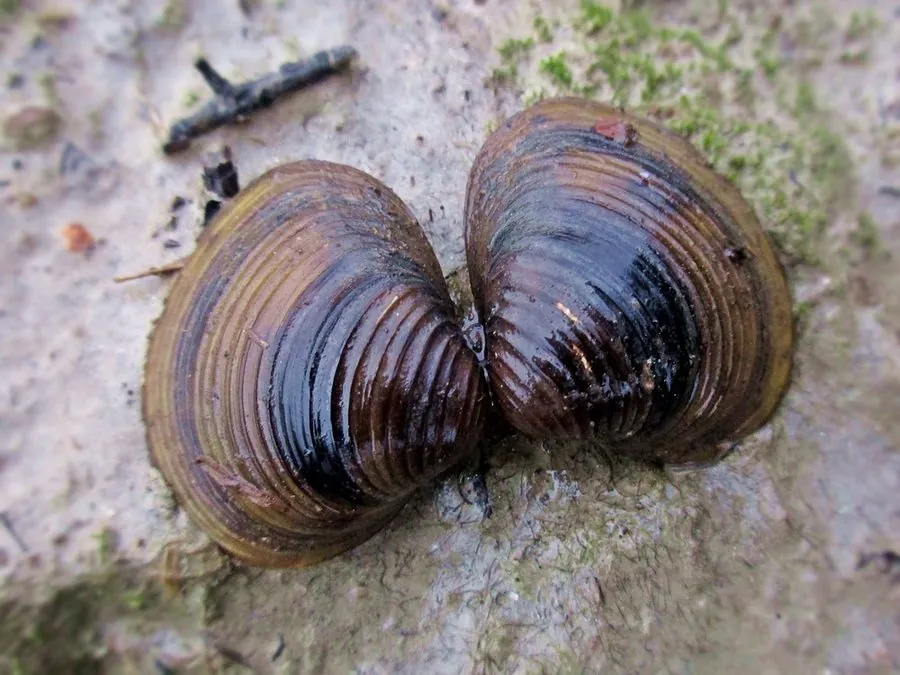

软体动物 · 动物界
河蚬 Corbicula fluminea

中国淡水河湖中常见的小型双壳类，壳面有同心圆状生长纹，肉质鲜美，是南方常见的食用贝类，被引入多国后成为入侵物种。
- 分类
- 门软体动物门纲双壳纲目帘蛤目科蚬科属蚬属
- 栖息环境
- 河流、湖泊和沟渠的沙泥底质，靠足部潜入沙中生活
- 地理分布
- 原产中国及东亚的淡水水域，现被引入北美和欧洲等地
- 保护级别
- 暂无评估；中国未列入国家重点保护野生动物名录
物种志
河蚬的贝壳呈三角形或卵圆形，壳质坚厚，壳面黄绿、棕褐或黑褐色，有明显的同心圆状生长纹，像树的年轮。壳长一般 2–4 cm，是体型较小的双壳类。
河蚬原产中国及东亚的河流、湖泊和沟渠，栖息于沙泥底质，靠足部潜入沙中。它是滤食性动物，靠水管吸入水，过滤其中的浮游生物和有机颗粒，一只成体每天可过滤数升水。河蚬雌雄同体，受精卵在鳃腔内发育，产出幼体。它是南方常见的食用贝类，可煮汤、爆炒，味道鲜美。河蚬被引入北美和欧洲后大量繁殖，成为著名的淡水入侵物种，会堵塞水管、影响水生生态，造成经济设施损失。目前它没有IUCN 的正式评估，中国未将其列入国家重点保护野生动物名录。
形态与习性
- 食性滤食浮游生物和有机颗粒，靠水管吸水
- 壳长一般 2–4 cm
- 栖息环境河流、湖泊和沟渠的沙泥底质
- 繁殖雌雄同体，受精卵在鳃腔内发育后产出幼体
- 食用南方常见食用贝类，可煮汤、爆炒
- 入侵性被引入北美和欧洲后大量繁殖，成为入侵物种
趣味知识
- 河蚬的壳面有一圈圈同心圆状生长纹，像树的年轮。
- 它是雌雄同体，受精卵在鳃腔内发育成幼体后才产出。
- 河蚬被引入北美和欧洲后大量繁殖，成为著名的淡水入侵物种。